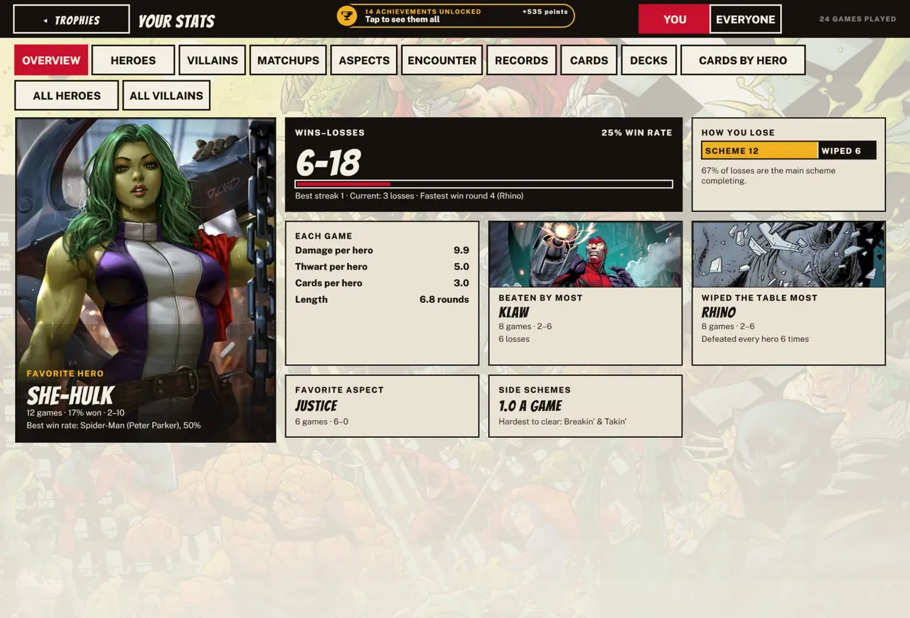
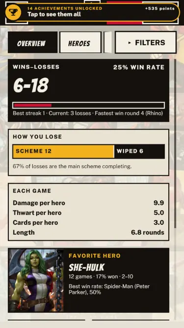
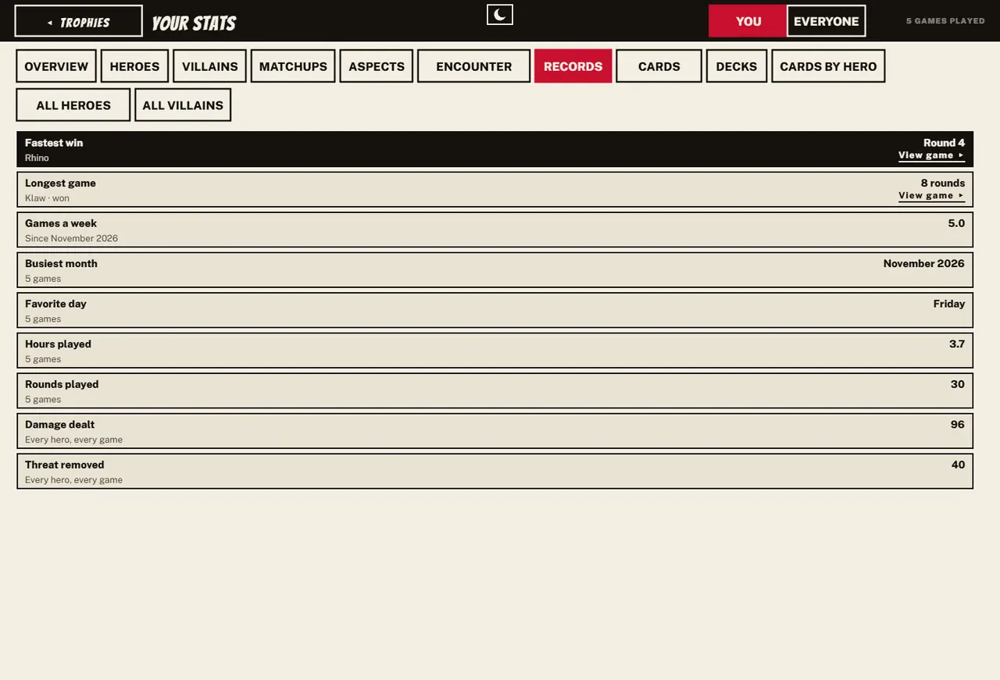
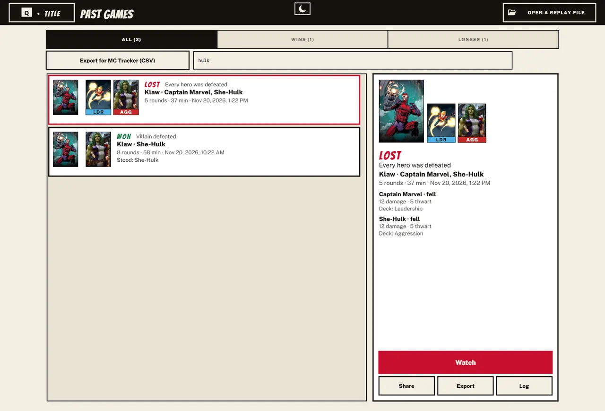
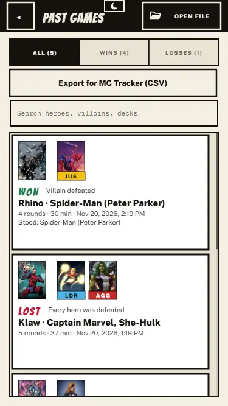
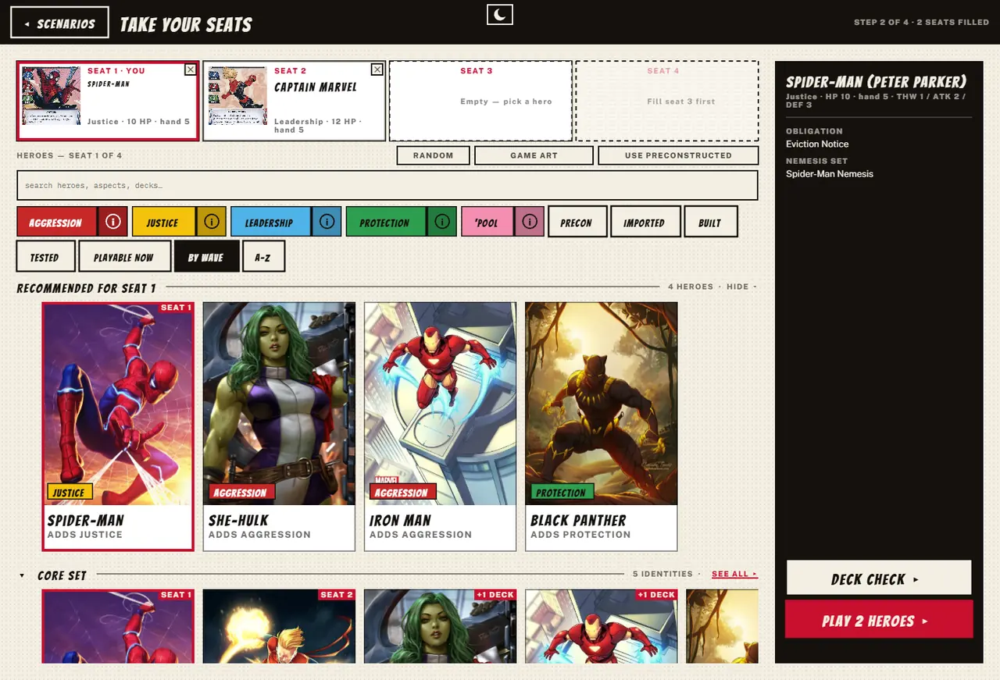
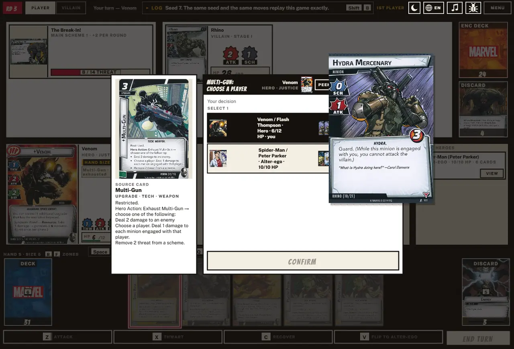

The Windows app opens again for everyone. Once Windows updated WebView2 to version 158, v0.51.0 crashed on start with "Can't open this page". This release fixes it, and Install for Steam no longer stops on some Windows PCs. Your stats gets a new Overview with your favorite hero standing tall, its records open the game they came from, and Past games has a search box. Take your seats has a Random hero, and the cards that choose a player to hit their engaged minions now offer only players who have one.
Multi-Gun, Explosive Arrow, Rocket Launcher and eight more offer only players with an engaged minion.
all from @bluefireF5ran's play notes, #911.
the start crash and Install for Steam, both reported on Discord.
If the Windows app showed "Can't open this page" with STATUS_BREAKPOINT, this release fixes it. Windows draws the app with Microsoft's WebView2, and version 158 of it crashes when a background worker loads a font the way the game's build packed one of its fonts. The game now hands that font over another way, which WebView2 158 loads fine.
Stuck on v0.51.0? Install v0.52.0 over it from the website's Download section. Your saves stay where they are. Thanks to Dreadheart on Discord for the report and the crash files that pinned it down.
On a wide screen, the Overview now stands your favorite hero's art tall at the left, with your record, how you lose, each game's averages and the villains beside it. Every stats tab sits on a faded wallpaper of the game's art. On a phone or a tablet held upright, the Overview keeps its grid.


Records that come from a single game now open that game. Fastest win, longest game, closest win, your best turn and most cards drawn show View game ▸. Press it and Past games opens with that game picked and its details showing. Back takes you to the same Stats tab. Suggested by @bluefireF5ran.


Suggested by @bluefireF5ran in #911.

Take your seats has a Random button. It seats a random hero in the active seat, from the heroes the screen offers right now. Each press picks a different hero, and a hero with many decks is no likelier than one with a single precon.

Cards that choose a player to hit their engaged minions now offer only players who have one. With one such player, the game picks them without asking. With none, nobody is asked and the rest of the card still resolves. Reported by @bluefireF5ran.

Multi-Gun, Explosive Arrow, Rocket Launcher, Blast of Wind, Bombs Away, Sunspot, Ice Blast, The Bellerophon, Spray Fire, Energy Daggers and Spider Bites.
Choosing a player now shows each player's engaged minions at the end of their row. On a desktop, hovering one opens its card hover with its hit points and statuses. Multi-Gun offers its minion option only while a minion is engaged.
With only one player in hero form, the game no longer asks for a player order first: that player is asked right away. With two or more, the first player still picks the order.
Issue #911 from @bluefireF5ran · PR #914
Reassignment's two picks now read "Move a counter FROM which S.H.I.E.L.D. support?" and "Move the counter TO which S.H.I.E.L.D. support?", so it's clear which is which.
Issue #911 from @bluefireF5ran · PR #914
On some Windows PCs, Install for Steam stopped and said a drive "C didn't exist, because the game's registry entry kept its folder in quotes. It now reads quoted paths, and one odd entry no longer stops the search. Get the fixed script from this release's downloads.
Issue #933 from Dreadheart on Discord · PR #934
A card tucked under a card that lets you spend it, like Falcon's Resource Reserve, couldn't be picked when you paid. It now shows in the payment strip beside your hand, tagged tucked, and Inspect offers Use as resource for it.
Issue #922 from @bluefireF5ran · PR #927
On an iPhone or iPad, tapping a text field like a search box or the MarvelCDB import zoomed the whole page in, and it stayed zoomed. It no longer does, and you can still pinch to zoom yourself.
Issue #939 from GarethMagis on Discord · PR #940
Grasping Tendrils paid with Symbiotic Bond's wild resource already counted it as Physical, so the villain is stunned. A test now covers it, so it stays that way.
Issue #911 from @bluefireF5ran · PR #914
Keep the ideas and reports coming from Pause ▸ Report a problem, a GitHub issue or the community Discord.
Played a run of games and wrote it all up in #911: the choose-a-player cards, Hunting Down Heroes, Maria Hill's prompts, the aspect tip, the Random hero, Past games search and records that open their game. Also reported the tucked cards that couldn't pay, #922.
Reported the Windows start crash, #932, sent the crash files that found it, and reported Install for Steam stopping, #933, on Discord.
Reported iPhone text fields zooming the page in, #939, on Discord.
merged into main.
across the engine, the cards, the client, the Steam script and this report.
the crash fix, the stats screens, the card prompts, their tests and this report.
across the same pull requests.